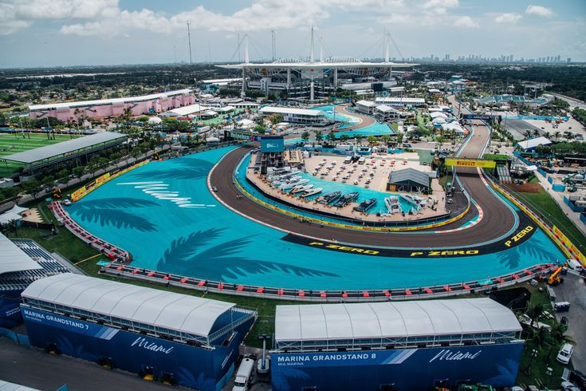

Miami International Autodrome

Technical Details
Location: Miami, USA
Length: 5.412 km
Laps: 57
First GP: 2022
Curiosities
The Miami International Autodrome is a temporary circuit built around the Hard Rock Stadium complex. It joined the F1 calendar in 2022, bringing a modern American spectacle to the championship. The layout combines slow technical sections with fast straights, designed for overtaking and entertainment. It is also known for its celebrity presence and entertainment-focused atmosphere.